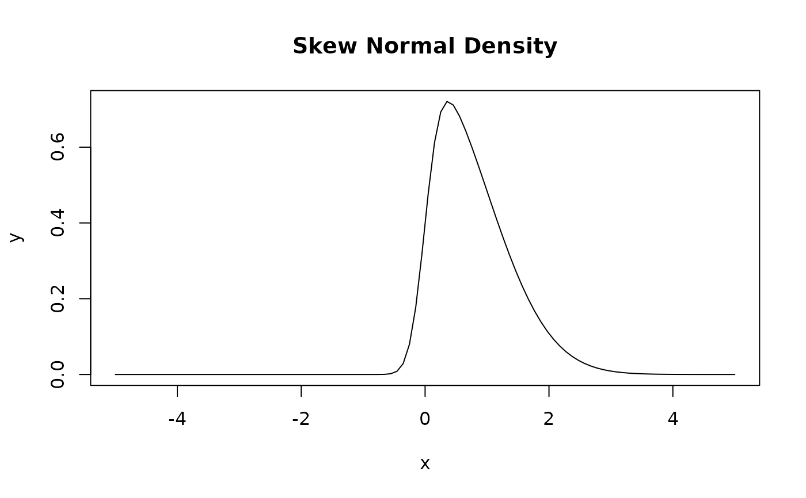

Density, distribution function and quantile function of the skew-normal
distribution with location xi, scale omega and shape alpha, whose
density is $$f(x) = \frac{2}{\omega} \phi(z) \Phi(\alpha z), \quad z =
(x - \xi) / \omega.$$
Usage
dsnorm(x, xi, omega, alpha, logC = 0, log = FALSE)
psnorm(q, xi = 0, omega = 1, alpha = 0, lower_tail = TRUE)
qsnorm(p, xi = 0, omega = 1, alpha = 0)Arguments
- x, q
Vector of quantiles.
- p
Vector of probabilities.
- xi
Location parameter.
- omega
Scale parameter, positive.
- alpha
Shape parameter.
alpha = 0gives the normal distribution.- logC
Log-constant added to the log density, so that the density is multiplied by
exp(logC).- log
Logical; if
TRUE,dsnorm()returns the log density.- lower_tail
Logical; if
TRUE(default), probabilities are \(P(X \le q)\), otherwise \(P(X > q)\).
Value
A numeric vector: the (log) density for dsnorm(), the
probabilities for psnorm() and the quantiles for qsnorm(). dsnorm()
has no defaults for xi, omega and alpha. psnorm() and qsnorm()
recycle their arguments to the longest, give a zero-length result when an
argument has length zero, and keep the names and dimensions of q or p,
as stats::pnorm() and stats::qnorm() do. psnorm() returns 0 and 1 at
-Inf and Inf, and NA for a missing q, a non-finite alpha or a
non-positive or missing scale. qsnorm() returns -Inf and Inf at p
of 0 and 1, and NA for p outside \([0, 1]\), a non-finite alpha or
a non-positive or missing scale.
Details
psnorm() computes \(F(q) = \Phi(z) - 2 T(z, \alpha)\) with
Owen's \(T\) function by 48-point Gauss-Legendre quadrature, to an
absolute error of about 2e-16. The upper tail is computed by
reflection, so a small probability in the heavy tail (the upper tail when
alpha > 0, the lower tail when alpha < 0) keeps its relative accuracy.
In the light tail (the upper tail when alpha < 0, the lower tail when
alpha > 0), the value is accurate only in absolute terms: a probability
near 1e-12 there can have a relative error of about 1e-4, and a
probability below about 1e-17 can come out as 0.
qsnorm() starts from qsnorm_fast() and refines the quantile by
Newton's method on the log of the smaller tail probability, which keeps
quantiles far out in the tails accurate. Where the smaller tail
probability is 1e-6 or more, psnorm(qsnorm(p)) returns p to a
relative error of about 1e-10. Further out in the light tail,
psnorm() loses relative accuracy to cancellation, so qsnorm()
computes that tail by a separate quadrature.
Examples
x <- seq(-2, 5, length.out = 100)
y <- dsnorm(x, xi = 0, omega = 1, alpha = 5)
plot(x, y, type = "l", main = "Skew Normal Density")

# The quantile function inverts the distribution function
p <- c(1e-10, 0.025, 0.5, 0.975)
q <- qsnorm(p, xi = 1, omega = 2, alpha = -3)
psnorm(q, xi = 1, omega = 2, alpha = -3)
#> [1] 1.00e-10 2.50e-02 5.00e-01 9.75e-01